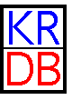

8th International Workshop on |
 |
The 8th International KRDB Workshop continues the tradition of annual
international workshops devoted to facilitate cross-fertilization between
the fields of knowledge representation (KR) and databases (DB), started in 1994.
KRDB-2001 will be held at the Pontificia Università
Urbaniana in Roma (Italy), on September 15, 2001, as a workshop of the 27th
International Conference on Very Large Data Bases. The deadline for submission
is May 20, 2001.
Topics
KRDB-2001 will focus on Modeling, Querying and Managing
Semistructured Data. Semistructured data are data that are self-describing,
irregular, and with a structure that is partially known, or subject to frequent
changes. They are usually formalized in terms of labeled graphs, and capture
data as found in many application areas, such as web information systems,
digital libraries, and data integration. Database researchers are studying
several aspects of semistructured data, including how to model such data, how to
query and restructure them, and how to store and manage them. On the other hand,
there are many kinds of reasoning that can be carried out on semistructured data
in order to support the above tasks. For instance, the discovery of certain
regularity may help in deciding the appropriate storage structures in a
particular context, or, the fact that a certain schema subsumes another one may
help in comparing data coming from different sources, or in translating data
from a certain format to another one. The goal of the workshop is to bring
together people from the Database and the Knowledge Representation and Reasoning
communities, in order to compare different points of views and various sets of
techniques that can be used for the tasks related to Modeling, Querying and
Managing Semistructured Data. Topics of interest include (but are not limited
to)
Program Committee
| Maurizio
Lenzerini Università di Roma "La Sapienza", Roma, Italy lenzerini@dis.uniroma1.it |
| Daniele Nardi
Università di Roma "La Sapienza", Roma, Italy nardi@dis.uniroma1.it |
| Werner Nutt
Heriot-Watt University, UK nutt@cee.hw.ac.uk |
| Dan
Suciu University of Washington, Seattle, WA, USA suciu@cs.washington.edu |
| Paper Submission Deadline | May 20, 2001 |
| Acceptance Notification | July 2, 2001 |
| Final Version Due | July 23, 2001 |
| The Workshop | September 15, 2001 |
TITLE: Declarative Information Extraction, Web Crawling and Recursive Wrapping with Lixto SPEAKER: Georg Gottlob, Vienna University of Technology, (TU Wien) ABSTRACT: Lixto is a system and method for the visual and interactive generation of wrappers for Web pages under the supervision of a human developer, for automatically extracting information from Web pages using such wrappers, and for translating the extracted content into XML. In this talk, we describe some advanced features of Lixto, such as disjunctive pattern definitions, specialization rules, and Lixto's capability of collecting and aggregating information from several linked Web pages. We illustrate these features with significant examples from the commercial domain. Joint work with Robert Baumgartner and Sergio Flesca. |
Final versions should be sent by electronic mail as standard postscript or .pdf file attachments to lenzerini@dis.uniroma1.it and must arrive before July 23, 2001.